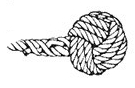

monkeyfist.js | |
|---|---|
| MonkeyFist provides pre-Dom and doc-Ready callback initialization with a myriad of options. See github for the full readme. | (function( $ ) {
var MonkeyFist, MF = (function MF() {
var slice = Array.prototype.slice,
pre_params, ready_params,
fn = { |
MF.initialize()Allows you to pass functions as pre-DOM and doc ready handlers, which are executed in callback chains along with the default handlers (See bindEvents and liveEvents) Usage: That will execute the following
| initialize: function(preDom, postDom){
var preReady = fn.constr( fn.liveEvents ),
onReady = fn.constr ( fn.bindEvents );
pre_params = (preDom && !!preDom.params) ? preDom.params: null;
ready_params = (postDom && !!postDom.params) ? postDom.params: null;
preReady.call( pre_params, preDom );
$( onReady.call( ready_params, postDom ) );
}, |
MF.constr()This is a factory for creating callback chains. It works by storing any arguments initially passed to it ad returning a function that calls them and any additional arguments passed to it. Usage: It will store the original argument. And then execute additional arguments passed at run time: That will execute
| constr: function() {
var args_orig = slice.call(arguments);
return function constr(){
var args = args_orig.concat(slice.call(arguments)),
i = 0,
a = args.length,
params = $.isPlainObject(this) === true ? this: null;
for(i; i < a; i += 1 ) {
if( $.isFunction( args[i] ) ) {
args[i].call(params);
}
}
};
}
}; |
MF.helper.monkey();Helper monkey builds functions that support callback hoisting from within Initialize(). It does this by relying on the cached values for preDom and postDom params and returning a "hoisted" function. Usage: | fn.helper = {};
fn.helper.monkey = function( type, c ){
var params,
callback = ( $.isFunction(type) ) ? type : c;
return function(){
if( !!pre_params && type.match(/predom/i )){
params = pre_params;
}
if( !!ready_params && type.match(/domready/i )){
params = ready_params;
}
if( $.isPlainObject( this ) ) {
params = this;
}
if( !!params && $.isFunction( params.hoist ) ){
if( !!params.greedy ) {
return params.hoist();
} else {
params.hoist();
}
}
if( $.isFunction( callback ) ) {
return callback();
}
};
}; |
MF.liveEvents()This is the generic preDom handler and is executed as soon as | fn.liveEvents = function(){
var params = this;
if( $.isPlainObject(params) && $.isFunction( params.hoist ) ){
if( !!params.greedy ) {
return params.hoist();
} else {
params.hoist();
}
}
/** Your custom code lives here :) */
}; |
MF.bindEvents()This is the generic postDom (doc ready) handler, and fires on document ready.
This is meant to house your own custom code, or to be overwritten with | fn.bindEvents = function(){
var params = this;
if( $.isPlainObject(params) && $.isFunction( params.hoist ) ){
if( !!params.greedy ) {
return params.hoist();
} else {
params.hoist();
}
}
/** Your custom code lives here :) */
};
return fn;
})(); |
| Globally persist with MF or MonkeyFist | window.MF = window.MonkeyFist = MF;
})(jQuery);
/**
Copyright (C) 2011 by Samuel Breed and Quick Left
Permission is hereby granted, free of charge, to any person obtaining a copy
of this software and associated documentation files (the "Software"), to deal
in the Software without restriction, including without limitation the rights
to use, copy, modify, merge, publish, distribute, sublicense, and/or sell
copies of the Software, and to permit persons to whom the Software is
furnished to do so, subject to the following conditions:
The above copyright notice and this permission notice shall be included in
all copies or substantial portions of the Software.
THE SOFTWARE IS PROVIDED "AS IS", WITHOUT WARRANTY OF ANY KIND, EXPRESS OR
IMPLIED, INCLUDING BUT NOT LIMITED TO THE WARRANTIES OF MERCHANTABILITY,
FITNESS FOR A PARTICULAR PURPOSE AND NONINFRINGEMENT. IN NO EVENT SHALL THE
AUTHORS OR COPYRIGHT HOLDERS BE LIABLE FOR ANY CLAIM, DAMAGES OR OTHER
LIABILITY, WHETHER IN AN ACTION OF CONTRACT, TORT OR OTHERWISE, ARISING FROM,
OUT OF OR IN CONNECTION WITH THE SOFTWARE OR THE USE OR OTHER DEALINGS IN
THE SOFTWARE.
*/
|